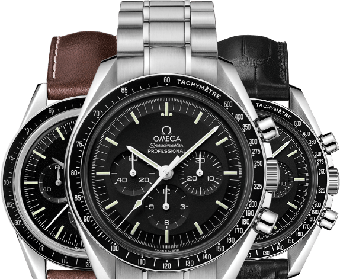

SERVICES
Watch repair
We offer in house service for pocket watches, mechanical and quartz wristwatches, high grade Swiss watches as well as for the brands that we carry.
Jewelry repair
Our in-house jeweler is a master at fixing a simple break to repairing a treasured heirloom.
Battery replacement
Selected battery replacement on most watch brands.
Custom design
Let our platinum and goldsmith transform your dreams into reality with precious stones from your collection or ours. With a photograph, a drawing, or even a word picture, our artisan craftsman will create a one-of-a kind piece that reflects precisely your vision and style. We can also help you refresh a favorite keepsake, or update a treasured heirloom.
Appraisals
From identification to evaluation, our appraiser will provide the proper documentation whether for insurance or fair market value.
